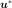
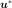

Analytical¶
- class Analytical(*args)¶
Base class to evaluate the probability of failure of a system.
- Available constructors:
Analytical(nearestPointAlgorithm, event, physicalStartingPoint)
- Parameters
- nearestPointAlgorithm
OptimizationAlgorithm Optimization algorithm used to research the design point.
- event
RandomVector Failure event.
- physicalStartingPointsequence of float
Starting point of the optimization algorithm, declared in the physical space.
- nearestPointAlgorithm
See also
FORM,SORM,StrongMaximumTest,Event,StandardEvent,AnalyticalResult
Notes
Used in reliability analysis, Analytical is a base class for the approximation methods
FORMandSORMenabling to evaluate the failure probability of a system. A failure event is defined as follows : where denotes a random input vector representing the sources
of uncertainties,
denotes a random input vector representing the sources
of uncertainties,  is a determinist vector representing the
fixed variables.
is a determinist vector representing the
fixed variables.  is the limit state function of
the model separating the failure domain from the safe domain.
Considering
is the limit state function of
the model separating the failure domain from the safe domain.
Considering  the joint probability density function
of the random variables , the probability of failure of the
event
the joint probability density function
of the random variables , the probability of failure of the
event  is :
is :
The analytical methods use an isoprobabilistic transformation to move from the physical space to the standard normal space (U-space) where distributions are spherical (invariant by rotation by definition), with zero mean, unit variance and unit correlation matrix. The usual isoprobabilistic transformations are the Generalized Nataf transformation and the Rosenblatt one.
In that new U-space, the event has the new expression defined from the transformed limit state function of the model and its boundary : . Then, the event probability
 rewrites :
rewrites :where
 is the density function of the distribution in the
standard space.
is the density function of the distribution in the
standard space.The analytical methods rely on the assumption that most of the contribution to
comes from points located in the vicinity of a particular point
 , the design point, defined in the U-space as the point located
on the limit state surface verifying the event of maximum likelihood. Given the
probabilistic characteristics of the U-space, has a geometrical
interpretation: it is the point located on the event boundary and at minimal
distance from the origin of the U-space. Thus, considering 
its coordinates in the U-space, the design point is the result of the
constrained optimization problem :
, the design point, defined in the U-space as the point located
on the limit state surface verifying the event of maximum likelihood. Given the
probabilistic characteristics of the U-space, has a geometrical
interpretation: it is the point located on the event boundary and at minimal
distance from the origin of the U-space. Thus, considering 
its coordinates in the U-space, the design point is the result of the
constrained optimization problem :Then the limit state surface is approximated in the standard space by a linear surface (
FORM) or by a quadratic surface (SORM) at the design point in order to evaluate the failure probability. For more information on this evaluation, see the documentation associated with these two methods.The result of the optimization problem is recoverable thanks to the method
getAnalyticalResult().The unicity and the strongness of the design point can be checked thanks to the
Strong Maximum Test.Examples
>>> import openturns as ot >>> myFunction = ot.SymbolicFunction(['E', 'F', 'L', 'I'], ['-F*L^3/(3*E*I)']) >>> myDistribution = ot.Normal([50.0, 1.0, 10.0, 5.0], [1.0]*4, ot.IdentityMatrix(4)) >>> vect = ot.RandomVector(myDistribution) >>> output = ot.CompositeRandomVector(myFunction, vect) >>> myEvent = ot.ThresholdEvent(output, ot.Less(), -3.0) >>> # We create an OptimizationAlgorithm algorithm >>> myOptim = ot.AbdoRackwitz() >>> myAlgo = ot.Analytical(myOptim, myEvent, [50.0, 1.0, 10.0, 5.0])
Methods
Accessor to the result.
Accessor to the object's name.
getEvent()Accessor to the event of which the probability is calculated.
getId()Accessor to the object's id.
getName()Accessor to the object's name.
Accessor to the optimization algorithm used to find the design point.
Accessor to the starting point of the optimization algorithm.
Accessor to the object's shadowed id.
Accessor to the object's visibility state.
hasName()Test if the object is named.
Test if the object has a distinguishable name.
run()Perform the research of the design point.
setEvent(event)Accessor to the event of which the probability is calculated.
setName(name)Accessor to the object's name.
setNearestPointAlgorithm(solver)Accessor to the optimization algorithm used to find the design point.
setPhysicalStartingPoint(physicalStartingPoint)Accessor to the starting point of the optimization algorithm.
setShadowedId(id)Accessor to the object's shadowed id.
setVisibility(visible)Accessor to the object's visibility state.
- __init__(*args)¶
- getAnalyticalResult()¶
Accessor to the result.
- Returns
- result
AnalyticalResult Result structure which contains the results of the optimisation problem.
- result
- getClassName()¶
Accessor to the object’s name.
- Returns
- class_namestr
The object class name (object.__class__.__name__).
- getEvent()¶
Accessor to the event of which the probability is calculated.
- Returns
- event
RandomVector Event of which the probability is calculated.
- event
- getId()¶
Accessor to the object’s id.
- Returns
- idint
Internal unique identifier.
- getName()¶
Accessor to the object’s name.
- Returns
- namestr
The name of the object.
- getNearestPointAlgorithm()¶
Accessor to the optimization algorithm used to find the design point.
- Returns
- algorithm
OptimizationAlgorithm Optimization algorithm used to research the design point.
- algorithm
- getPhysicalStartingPoint()¶
Accessor to the starting point of the optimization algorithm.
- Returns
- point
Point Starting point of the optimization algorithm, declared in the physical space.
- point
- getShadowedId()¶
Accessor to the object’s shadowed id.
- Returns
- idint
Internal unique identifier.
- getVisibility()¶
Accessor to the object’s visibility state.
- Returns
- visiblebool
Visibility flag.
- hasName()¶
Test if the object is named.
- Returns
- hasNamebool
True if the name is not empty.
- hasVisibleName()¶
Test if the object has a distinguishable name.
- Returns
- hasVisibleNamebool
True if the name is not empty and not the default one.
- run()¶
Perform the research of the design point.
Notes
Performs the research of the design point and creates a
AnalyticalResult, the structure result which is accessible with the methodgetAnalyticalResult().
- setEvent(event)¶
Accessor to the event of which the probability is calculated.
- Parameters
- event
RandomVector Event of which the probability is calculated.
- event
- setName(name)¶
Accessor to the object’s name.
- Parameters
- namestr
The name of the object.
- setNearestPointAlgorithm(solver)¶
Accessor to the optimization algorithm used to find the design point.
- Parameters
- algorithm
OptimizationAlgorithm Optimization algorithm used to research the design point.
- algorithm
- setPhysicalStartingPoint(physicalStartingPoint)¶
Accessor to the starting point of the optimization algorithm.
- Parameters
- pointsequence of float
Starting point of the optimization algorithm, declared in the physical space.
- setShadowedId(id)¶
Accessor to the object’s shadowed id.
- Parameters
- idint
Internal unique identifier.
- setVisibility(visible)¶
Accessor to the object’s visibility state.
- Parameters
- visiblebool
Visibility flag.